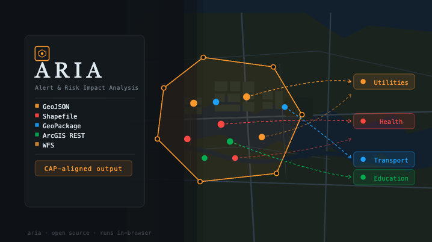

Last


A climate scenario planning tool for officials, civil servants, and practitioners. Choose the state of the world at each turning point and see where 17 years leads.

A system that retrieves and summarizes GIS data for defined polygons and for contextual emergency alerts and scenario planning.

Blended actual and synthetic disaster impacts with global coverage and complete indicator coverage.

Deep localization. Analyzing public data to .